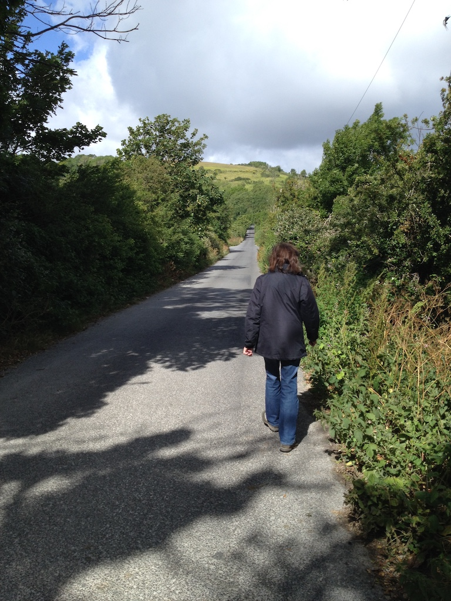

Morning Walk
 Grandma and I often go for a walk. Sometimes we are out for half an hour and sometimes for an hour and a half. This morning our walk only took three quarters of an hour. We left home at a quarter to ten, so you can work out when we got back.
Grandma and I often go for a walk. Sometimes we are out for half an hour and sometimes for an hour and a half. This morning our walk only took three quarters of an hour. We left home at a quarter to ten, so you can work out when we got back.
Between our garage and the house next door there is a path. In Sussex (the county in which we live) these paths between houses are called twittens. Our twitten goes up, with 102 steps!
This morning we went up the twitten and along a lane, then up the 'snake path'. We call it the snake path because we once saw an adder basking in the sunshine on the path. When he saw us he slithered away into the long grass before I had a chance to take his photo.
You can find a picture of an adder, they are very pretty, and find out why they like to be in the sun. We didn't see one this morning.
Grandma walks quite fast and I sometimes have difficulty keeping up with her.